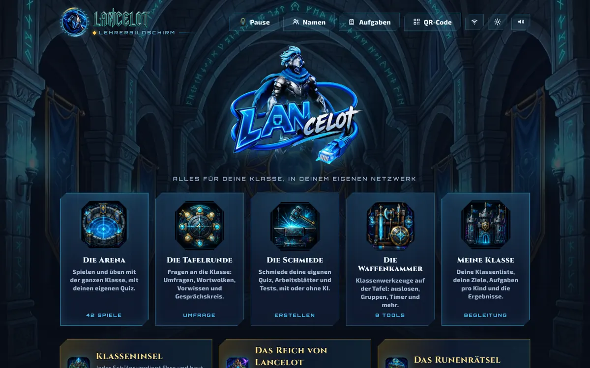
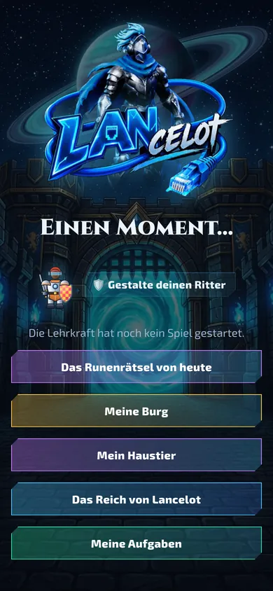
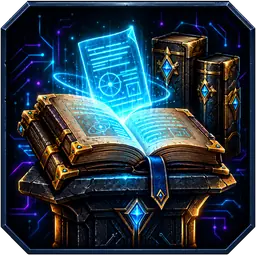
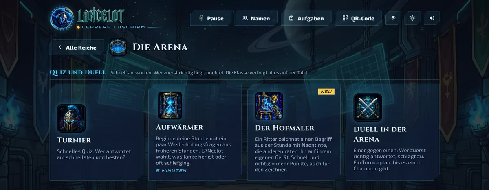
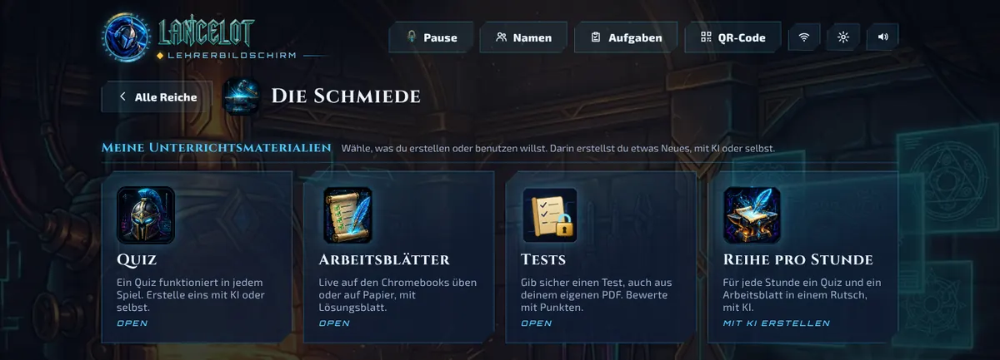
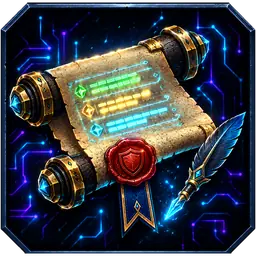
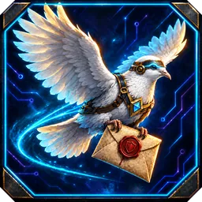

Von einer Lehrkraft gemacht, für die Klasse
Alles für deine Klasse, in deinem eigenen Netzwerk
LANcelot läuft auf dem PC in deiner Klasse. Die Kinder scannen den QR-Code an der Tafel und spielen auf Chromebook, Tablet oder Handy mit. Keine Konten für Kinder, keine Grenze bei Kindern oder Fragen.
Bald verfügbar · Windows-PC · Die Kinder spielen im Browser
Alles in einem
Quiz, Umfragen, Spiele, Arbeitsblätter und Klassenwerkzeuge in einer App.
Lokal
Gespielt wird über das Schulnetz. Schnell, auch mit 30 Geräten gleichzeitig.
Privat
Namen und Ergebnisse bleiben auf dem PC in deiner Klasse.
So funktioniert es
LANcelot starten
Doppelklick auf dem Klassen-PC. Der Lehrerbildschirm öffnet sich an der Tafel.
Die Kinder scannen
Sie scannen den QR-Code oder tippen die Adresse ein. Namen eingeben, fertig.
Spielen und lernen
Du wählst Quiz und Spiel. Die Klasse spielt mit, du verfolgst alles live.


Fünf Hallen, eine Arbeitsweise
Jeder Teil hat ein Symbol und einen Satz Erklärung. Wer eine Halle kennt, kennt alle.

Die Arena
Spielend üben mit deinen eigenen Quiz: schnelle Quiz, Duelle, Teamspiele und Abenteuer.

Die Tafelrunde
Die ganze Klasse befragen: Umfragen, Aussagen, Wortwolken, offene Fragen und Gesprächskreise.

Die Schmiede
Erstelle Quiz, Arbeitsblätter und Tests, mit KI oder selbst. Live spielen oder auf Papier mit Lösungsblatt.

Die Waffenkammer
Klassenwerkzeuge an der Tafel: Losrad, Gruppen, Timer, Lautstärkemesser, Würfel und Klassendienste.

Die Chroniken
Deine Lehrbücher, deine Planung und deine Klasse: unterrichten, begleiten und berichten.
40+ Spiele für deinen eigenen Stoff
Jedes Spiel läuft mit jedem Quiz. Richtige Antworten geben Treibstoff, Munition, Energie oder eine Kraft. Wer richtig antwortet, kommt weiter.

Quiz und Duell
 TurnierSchnelles Quiz: Wer antwortet am schnellsten und besten?
TurnierSchnelles Quiz: Wer antwortet am schnellsten und besten? AufwärmerBeginne deine Stunde mit ein paar Wiederholungsfragen aus früheren Stunden. LANcelot wählt, was lange her ist oder oft schiefging.
AufwärmerBeginne deine Stunde mit ein paar Wiederholungsfragen aus früheren Stunden. LANcelot wählt, was lange her ist oder oft schiefging. Der HofmalerEin Ritter zeichnet einen Begriff aus der Stunde mit Neontinte, die anderen raten ihn auf ihrem eigenen Gerät. Schnell und richtig = mehr Punkte, auch für den Zeichner.
Der HofmalerEin Ritter zeichnet einen Begriff aus der Stunde mit Neontinte, die anderen raten ihn auf ihrem eigenen Gerät. Schnell und richtig = mehr Punkte, auch für den Zeichner. Duell in der ArenaEiner gegen einen: Wer zuerst richtig antwortet, schlägt zu. Ein Turnierplan, bis es einen Champion gibt.
Duell in der ArenaEiner gegen einen: Wer zuerst richtig antwortet, schlägt zu. Ein Turnierplan, bis es einen Champion gibt.
Zusammen spielen
 TitanenkampfJedes Team steuert einen Riesentitan. Jeder Schüler ist ein Teil: Schwert, Schild, Kern, Kanone oder Beine. Richtige Antworten laden deinen Teil auf. Alle Teile gleichzeitig richtig = Titanenschlag!
TitanenkampfJedes Team steuert einen Riesentitan. Jeder Schüler ist ein Teil: Schwert, Schild, Kern, Kanone oder Beine. Richtige Antworten laden deinen Teil auf. Alle Teile gleichzeitig richtig = Titanenschlag! Flucht aus dem KerkerDie ganze Klasse ist eingesperrt. Schmiedet zusammen Schlüssel, knackt Runencodes und besiegt den Kerkermeister: Tür um Tür nach draußen.
Flucht aus dem KerkerDie ganze Klasse ist eingesperrt. Schmiedet zusammen Schlüssel, knackt Runencodes und besiegt den Kerkermeister: Tür um Tür nach draußen. BurgbaumeisterBaut zusammen eine Burg: Jede richtige Antwort ist ein Stein. Hält sie, wenn der Drache angreift?
BurgbaumeisterBaut zusammen eine Burg: Jede richtige Antwort ist ein Stein. Hält sie, wenn der Drache angreift? TorwacheVerteidigt zusammen das Burgtor. Richtige Antworten geben Gold für deinen eigenen Turm. Am Ende kommt der Drache.
TorwacheVerteidigt zusammen das Burgtor. Richtige Antworten geben Gold für deinen eigenen Turm. Am Ende kommt der Drache. LehrerbossDu bist der Endboss: ein Riesenritter auf der Tafel. Die Klasse greift mit richtigen Antworten an, du schlägst zurück.
LehrerbossDu bist der Endboss: ein Riesenritter auf der Tafel. Die Klasse greift mit richtigen Antworten an, du schlägst zurück. Der VerräterRepariert zusammen den Kern, aber wer ist der Verräter? Stimmt an der Tafelrunde ab.
Der VerräterRepariert zusammen den Kern, aber wer ist der Verräter? Stimmt an der Tafelrunde ab. Das ReichErobert in Teams Gebiete, Stunde um Stunde. Alter Stoff kommt zurück, um euer Land zu verteidigen.
Das ReichErobert in Teams Gebiete, Stunde um Stunde. Alter Stoff kommt zurück, um euer Land zu verteidigen.
Rennen und Abenteuer
 Neon-CamelotEine große offene Ritterstadt: Die ganze Klasse rast gleichzeitig in Hoverkarts herum, die driften und springen. Jag Diebe, fahr Rennen, lösch Brände. Jede Mission beginnt mit einer Frage.
Neon-CamelotEine große offene Ritterstadt: Die ganze Klasse rast gleichzeitig in Hoverkarts herum, die driften und springen. Jag Diebe, fahr Rennen, lösch Brände. Jede Mission beginnt mit einer Frage. RitterrennenRennen auf Schwebrossen in 3D. Richtige Antworten füllen deinen Tank und geben Turbo.
RitterrennenRennen auf Schwebrossen in 3D. Richtige Antworten füllen deinen Tank und geben Turbo. RobopferdeBau dein eigenes Roboterpferd und rase um den Burgsee, mit Rampen, Nitro und geheimen Wegen. Runentruhen geben eine Frage: richtig = eine Waffe.
RobopferdeBau dein eigenes Roboterpferd und rase um den Burgsee, mit Rampen, Nitro und geheimen Wegen. Runentruhen geben eine Frage: richtig = eine Waffe. Die Prinzessin im TurmSpring nach oben und rette die Prinzessin. Richtige Antworten geben Energie.
Die Prinzessin im TurmSpring nach oben und rette die Prinzessin. Richtige Antworten geben Energie. PixelritterLauf und spring mit deinem eigenen Ritter durch Retro-Pixelwelten. Runenblöcke geben eine Frage: richtig = Power-up. Wer erreicht die meisten Runentore?
PixelritterLauf und spring mit deinem eigenen Ritter durch Retro-Pixelwelten. Runenblöcke geben eine Frage: richtig = Power-up. Wer erreicht die meisten Runentore? NeonflugLauf, spring und rutsch durch die Neonburg. An einem Fragetor läufst du durch die richtige Antwort für Turbo und ein höheres ×.
NeonflugLauf, spring und rutsch durch die Neonburg. An einem Fragetor läufst du durch die richtige Antwort für Turbo und ein höheres ×. RaketenritterFlieg deinen Raketenritter von Flagge zu Flagge über Lava, Stacheln und Laser. Jede Flagge ist eine Frage: richtig = Turbo. Wer ist am schnellsten?
RaketenritterFlieg deinen Raketenritter von Flagge zu Flagge über Lava, Stacheln und Laser. Jede Flagge ist eine Frage: richtig = Turbo. Wer ist am schnellsten? SpaltschwertTippe und dein glühendes Schwert schlägt einen Salto. Spalte Kristalle, Fässer und Roboter und bleib im Holz stecken. Jeder Runenpfahl ist eine Frage: richtig = goldene Klinge.
SpaltschwertTippe und dein glühendes Schwert schlägt einen Salto. Spalte Kristalle, Fässer und Roboter und bleib im Holz stecken. Jeder Runenpfahl ist eine Frage: richtig = goldene Klinge. WackelwagenFahr deinen Ritterkarren über Rampen, wackelige Brücken und Wippen. Jede Flagge eine Frage und ein anderer Karren: Eisräder, eckige Räder...
WackelwagenFahr deinen Ritterkarren über Rampen, wackelige Brücken und Wippen. Jede Flagge eine Frage und ein anderer Karren: Eisräder, eckige Räder... HeuhaufenjagdGrab dich durch deinen Neon-Heuhaufen, bis du die Kristallnadel findest. Richtige Antwort = besseres Werkzeug und der Kompass zeigt den Weg.
HeuhaufenjagdGrab dich durch deinen Neon-Heuhaufen, bis du die Kristallnadel findest. Richtige Antwort = besseres Werkzeug und der Kompass zeigt den Weg. BannerfeldZieh mit deinem Schwebross eine Lichtspur und schließe eine Schleife: Das ganze Land darin wird deine Farbe. Keine Energie mehr = Frage, richtig = Turbo.
BannerfeldZieh mit deinem Schwebross eine Lichtspur und schließe eine Schleife: Das ganze Land darin wird deine Farbe. Keine Energie mehr = Frage, richtig = Turbo. SchwarmwacheHalte deinen Ritter heil gegen Schwärme von Rostrobotern. Deine Waffen schießen von selbst. Balken voll = eine Frage: richtig = wähle dein eigenes Upgrade.
SchwarmwacheHalte deinen Ritter heil gegen Schwärme von Rostrobotern. Deine Waffen schießen von selbst. Balken voll = eine Frage: richtig = wähle dein eigenes Upgrade. PlasmatorElfmeterschießen gegen 8 Roboterritter: Ziel mit deinem Plasmaball und hechte als Torwart. Jeder Schuss eine Frage: richtig = goldener Ball und großer Schild.
PlasmatorElfmeterschießen gegen 8 Roboterritter: Ziel mit deinem Plasmaball und hechte als Torwart. Jeder Schuss eine Frage: richtig = goldener Ball und großer Schild. HakenritterSchwing mit deinem Plasmahaken von Kristallanker zu Kristallanker: halten = greifen, loslassen = fliegen. Jede Flagge eine Frage: richtig = goldener Haken.
HakenritterSchwing mit deinem Plasmahaken von Kristallanker zu Kristallanker: halten = greifen, loslassen = fliegen. Jede Flagge eine Frage: richtig = goldener Haken. WirbelritterSteuere deinen Plasmawirbel durch die Ritterstadt und verschlucke alles, was kleiner ist: Münzen, Karren, Häuser, Türme. Je mehr du verschluckst, desto größer wirst du. Jede richtige Frage = wachsen + Saugkraft.
WirbelritterSteuere deinen Plasmawirbel durch die Ritterstadt und verschlucke alles, was kleiner ist: Münzen, Karren, Häuser, Türme. Je mehr du verschluckst, desto größer wirst du. Jede richtige Frage = wachsen + Saugkraft. PurzelritterStuntparcours mit einem Ritter auf einer seltsamen Reitmaschine: Sprungschanzen, Hämmer, Laser und Kanonen. Jede Flagge eine Frage: richtig = Turbo.
PurzelritterStuntparcours mit einem Ritter auf einer seltsamen Reitmaschine: Sprungschanzen, Hämmer, Laser und Kanonen. Jede Flagge eine Frage: richtig = Turbo. TiefbohrerBohr so tief du kannst nach Gold, Kristall und Neonkernen. Richtige Antworten geben Treibstoff, die Schmiede macht deinen Bohrer stärker.
TiefbohrerBohr so tief du kannst nach Gold, Kristall und Neonkernen. Richtige Antworten geben Treibstoff, die Schmiede macht deinen Bohrer stärker. SchatzjagdSammle mit richtigen Antworten Gold und kauf clevere Upgrades.
SchatzjagdSammle mit richtigen Antworten Gold und kauf clevere Upgrades. KristallraubSchürfe mit richtigen Antworten Kristalle und knacke mit dem geheimen Wort den Tresor eines anderen.
KristallraubSchürfe mit richtigen Antworten Kristalle und knacke mit dem geheimen Wort den Tresor eines anderen.
Kampf in der Arena
 LaserschlachtLaserschlacht Rot gegen Blau. Munition verdienst du mit richtigen Antworten. Jeder Schüler wählt seine eigene Ansicht: von oben, hinter dem Ritter oder aus der Ich-Perspektive.
LaserschlachtLaserschlacht Rot gegen Blau. Munition verdienst du mit richtigen Antworten. Jeder Schüler wählt seine eigene Ansicht: von oben, hinter dem Ritter oder aus der Ich-Perspektive. SchlachtrosseSchwebrosse in einer Kampfarena. Laser, Raketen und Minen bekommst du nur mit richtigen Antworten.
SchlachtrosseSchwebrosse in einer Kampfarena. Laser, Raketen und Minen bekommst du nur mit richtigen Antworten. Neon DuelKampfspiel mit der ganzen Klasse: zwei Teams, zwei Ritter auf der Tafel. Richtig = Schlag, schnell = Combo, drei in Folge = Supermove.
Neon DuelKampfspiel mit der ganzen Klasse: zwei Teams, zwei Ritter auf der Tafel. Richtig = Schlag, schnell = Combo, drei in Folge = Supermove. Ritter RoyaleAlle in einer Arena und der Neonsturm schrumpft. Munition verdienst du mit richtigen Antworten. Der letzte Ritter gewinnt.
Ritter RoyaleAlle in einer Arena und der Neonsturm schrumpft. Munition verdienst du mit richtigen Antworten. Der letzte Ritter gewinnt. SternenfresserFriss Sternenstaub und kleinere Ritter, meide das Schwarze Loch. Richtige Antworten geben Masse, Turbo und Supernova.
SternenfresserFriss Sternenstaub und kleinere Ritter, meide das Schwarze Loch. Richtige Antworten geben Masse, Turbo und Supernova. RitterschlangeEine Neon-Lanzenschlange, die mit richtigen Antworten wächst. Schneide anderen den Weg ab und friss ihr Licht.
RitterschlangeEine Neon-Lanzenschlange, die mit richtigen Antworten wächst. Schneide anderen den Weg ab und friss ihr Licht. RobomaulwurfRobotermaulwürfe schießen aus den Burgbrunnen: Hau sie mit deinem Schwert. Richtige Antworten laden dein Schwert auf und geben das Feuerschwert.
RobomaulwurfRobotermaulwürfe schießen aus den Burgbrunnen: Hau sie mit deinem Schwert. Richtige Antworten laden dein Schwert auf und geben das Feuerschwert. BurgsturmFallende Neonblöcke: Fülle Reihen und bombardiere die Burgen deiner Mitschüler. Richtige Antworten geben einen Runenschild und doppelte Angriffe.
BurgsturmFallende Neonblöcke: Fülle Reihen und bombardiere die Burgen deiner Mitschüler. Richtige Antworten geben einen Runenschild und doppelte Angriffe.
Unterrichtsmaterial in Sekunden, mit KI
Gib ein Thema und die Klassenstufe an oder ziehe ein Foto deines Lehrbuchs hinein. Die KI erstellt ein Quiz, ein Arbeitsblatt oder eine ganze Reihe pro Stunde, auf drei Niveaus.
- Funktioniert mit Gemini, ChatGPT oder Claude: LANcelot kopiert den Auftrag, du fügst die Antwort wieder ein.
- Oder gib deinen eigenen Schlüssel ein und alles geht mit einem Klick.
- Arbeitsblätter spielst du live in der Klasse oder druckst sie mit Lösungsblatt.
- Nur das Erstellen mit KI braucht Internet. Gespielt wird über das Klassennetz.

Jedes Kind auf seinem Niveau
Pro Fach wählst du für jedes Kind ein Niveau. Quiz, Arbeitsblätter und Aufgaben passen sich an.
Page
Mehr Unterstützung und leichtere Fragen
Knappe
Der normale Stoff
Ritter
Eine Herausforderung für alle, die weiter können
Begleiten, Förderung und Zeugnisse
Jede Antwort landet im Logbuch, verknüpft mit den Lehrplanzielen. So siehst du sofort, wer Hilfe braucht, und dein Zeugnis füllt sich fast von selbst.
Förderübersicht
Wer am meisten Aufmerksamkeit braucht, steht oben. Du siehst, welche Ziele die ganze Klasse wiederholen sollte, wer an den Fördertisch kommt und welche Denkfehler oft vorkommen.

Aufgaben pro Kind
Gib ein Quiz oder Arbeitsblatt an ein Kind oder eine kleine Gruppe, jedes auf seinem Niveau. Auch von zu Hause vorzubereiten.

Die Siegelrolle: dein Zeugnis
Die Tests kommen pro Fach von selbst hinein. Du ergänzt Symbole, Kommentare und das Logo deiner Schule.

Die Brieftaube: ein Brief nach Hause
Pro Kind ein Brief mit dem korrigierten Test, was schon klappt, was noch zu üben ist und Neuigkeiten aus der Klasse.
Warum sich die Kinder jeden Tag darauf freuen
Ihr eigener Ritter
Helm, Rüstung, Waffe und Schild selbst gewählt. Der Ritter spielt in jedem Spiel mit.

Klasseninsel
Mit Ehre für Einsatz und Fortschritt baut jedes Kind eine eigene Burg. Ohne Rangliste.

Mein Haustier
Ein Ei, das schlüpft und mitwächst. Strafen gibt es nicht.

Das Runenrätsel
Jeden Tag ein geheimes Wort zum Knacken, auf drei Niveaus.
Die Daten der Kinder bleiben in deiner Klasse
- LANcelot läuft auf deinem eigenen PC. Keine Cloud und keine Konten für Kinder.
- Namen, Antworten und Ergebnisse liegen in einem Ordner auf diesem PC. Du entscheidest, was damit passiert.
- Keine Werbung und kein Tracking.
- Nutzt du KI, geht nur dein Auftrag (Thema oder Unterrichtsmaterial) an die KI deiner Wahl. Keine Namen der Kinder.
Läuft auf dem, was deine Klasse schon hat
- Digitale Tafel oder BildschirmDer Lehrerbildschirm und das Spiel
- Chromebooks und LaptopsEinfach im Browser
- Tablets und HandysQR-Code scannen und spielen
In fünf Sprachen
Niederländisch, Englisch, Französisch, Spanisch und Deutsch. Wähle die Sprache in den Einstellungen und jeder Bildschirm wechselt mit, auch bei den Kindern.
Hol LANcelot in deine Klasse
LANcelot ist bald für Lehrkräfte und Schulen verfügbar.
Bald
Du brauchst nur einen Windows-PC in der Klasse. Die Kinder spielen im Browser mit.
Häufige Fragen
Wann kann ich LANcelot nutzen?
LANcelot ist bald verfügbar. Auf dieser Website erfährst du es zuerst.
Brauche ich Internet?
Gespielt wird über das lokale Schulnetz: der PC und die Geräte der Kinder müssen im selben Netz sein. Nur das Erstellen von Material mit KI braucht Internet.
Brauchen die Kinder ein Konto?
Nein. Sie tippen ihren Namen ein und spielen. LANcelot merkt sich ihren Ritter und ihre Ergebnisse auf dem Klassen-PC.
Wie viele Kinder können mitspielen?
Es gibt keine Grenze. Eine ganze Klasse mit dreißig Kindern spielt flüssig, auf Chromebooks, Tablets und Handys gemischt.
Was brauche ich?
Einen Windows-PC (meist den an der Tafel), das Schulnetz und Geräte mit Browser für die Kinder.
Kann ich meinen eigenen Stoff nutzen?
Natürlich. Erstelle Quiz selbst, lass die KI sie aus deinem Lehrbuch oder einer PDF machen und ordne alles in Ordnern nach Fach und Stunde.